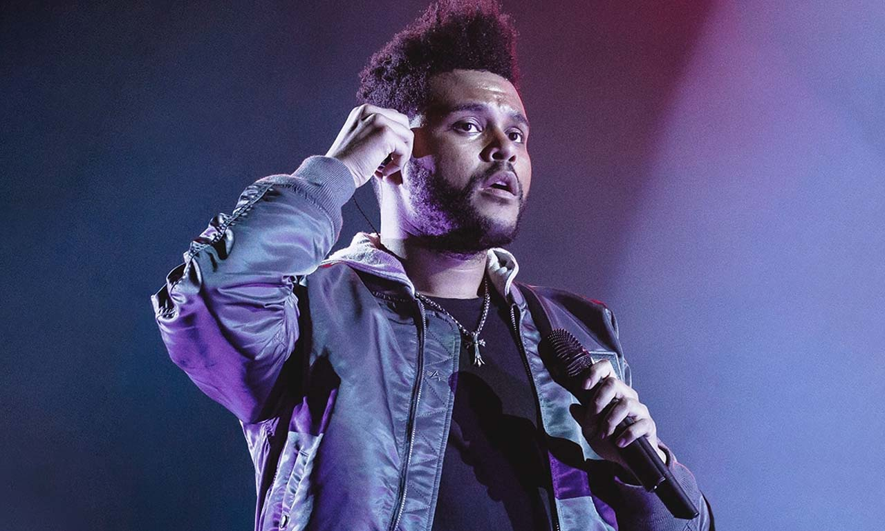
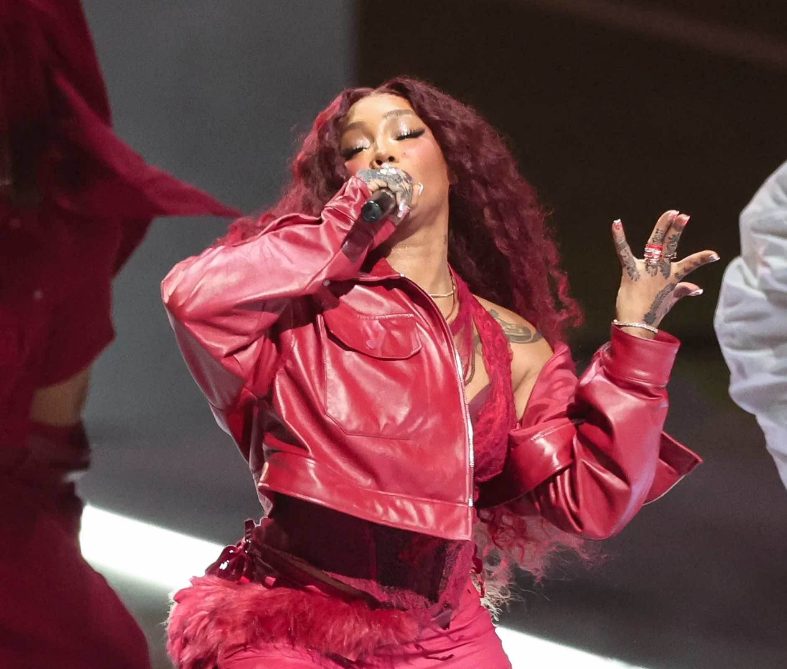

Hola, soy Zihan Chen. Soy un apasionado al mundo de diseño, billar y gimnasio, siempre me gusta compartir mi experiencia y consejos del gimnasio con los demás personas.
Quién soy
Mi novia
Esta es mi novia Maria. Es una chica que siempre ha estado a mi lado apoyándome en todo. Llevamos 1 año y 4 meses(obviamente va ser mucho más :)), también me regala muchísimas cosas, sobre todo cartas de sorpresas diciéndome todo lo que me quiere dar. Cuando estoy triste porque he suspendido algún examen súper importante, ella siempre me dice con todo el cariño del mundo que no va a pasar nada. Me recoge 4 de 5 veces cuando termino de entrenar en el gimnasio y también es mi mejor compañera jugando al billar. Aquí os presento algunas fotos nuestras :)

Mis juegos favoritos
Estos son mis 3 juegos favoritos. 1-Minecraft(Minecraft es un videojuego de mundo abierto donde los jugadores pueden explorar, construir y sobrevivir en un entorno generado aleatoriamente hecho de bloques) 2-Forza Horizon 5(Forza Horizon 5 es un videojuego de carreras de mundo abierto desarrollado por Playground Games. Ambientado en un mapa extenso y detallado de México, ofrece una experiencia de conducción realista con una gran variedad de coches y eventos. ) 3-Dragon ball SparkingZero(El juego cuenta con una impresionante plantilla de 182 personajes jugables, abarcando diversas sagas del universo Dragon Ball, incluyendo por primera vez personajes de Dragon Ball Super. Los combates se desarrollan en amplios escenarios tridimensionales con elementos destructibles, ofreciendo una experiencia dinámica y fiel al estilo del anime. ) Me encanta jugar en mi tiempo libre y estos son los que más disfruto.


Mi cantante favorito
Mi cantante favorito es Travis Scott(Travis Scott es un rapero, cantante y productor estadounidense conocido por su estilo único y su impacto en la música hip-hop. Ha lanzado éxitos como Sicko Mode y Goosebumps, además de colaborar con marcas y artistas de renombre), The Weeknd(The Weeknd es un cantante, compositor y productor canadiense conocido por su estilo R&B alternativo y su voz distintiva. Alcanzó el éxito con temas como Blinding Lights, Save Your Tears y The Hills) y SZA(SZA es una cantante y compositora estadounidense de R&B alternativo, conocida por su estilo soulful y letras introspectivas. Alcanzó el éxito con álbumes como Ctrl y SOS, con hits como Kill Bill y Good Days.). Sus músicas siempre me inspiran y me hacen sentir bien. Aquí hay algunas imágenes relacionadas con ellos.


Mi deporte favorito
Mi deporte favorito es billar y gimnasio. Me encanta practicarlo y ver torneos de billar. Aquí os presento unas imágenes de algunos jugadores que me gustan.

.png)
Mi número de teléfono
Si deseas contactarme, aquí está mi número de teléfono:
+34 689 25 88 39